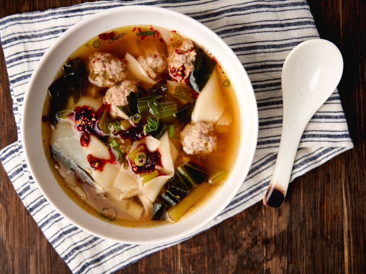

A Finished Lazy Wonton Soup

For this lazy wonton soup, you skip making filled wontons, and drop pork meatballs and quartered wonton wrappers right into the gingery, flavorful broth.
This recipe is SO delicious!
Ingredients
- 2 quarts chicken stock or broth
- 1 bunch green onions, divided
- 1 garlic clove, thinly sliced
- 1 (3-inch) piece fresh ginger, peeled, or 2 teaspoons ground ginger
- 2 tablespoons soy sauce, plus more to taste
- 1.5 teaspoons rice vinegar
- 1 tablespoon brown sugar
- 1 teaspoon kosher salt, divided
- 1 pound ground pork
- 2 teaspoons toasted sesame oil
- 2 teaspoons cornstarch
- 3 heads baby bok choy, roughly chopped (about 3 cups)
- 20 wonton wrappers, cut into quarters
- Sriracha hot sauce or chili crunch (optional)
Steps
- Place chicken stock in a large saucepan or Dutch oven over medium-high heat. Cut white parts of green onions into 1-inch pieces and add to broth. Add garlic clove. Thinly slice 1 inch ginger (or 1 teaspoon ground) and add to stock. Add 1 tablespoon soy sauce, vinegar, brown sugar and 1/2 teaspoon salt. Bring mixture to a boil, stirring occasionally.
- Place pork in a bowl. Finely slice remaining green parts of green onions. Set aside 3 tablespoons for garnish. Add remaining onions to the bowl; grate in remaining 2-inch piece of ginger. Add remaining soy sauce, remaining salt, sesame oil, and cornstarch to the bowl; mix until well combined.
- Form mixture into 1-inch balls and add to broth. Alternatively, use a small spoon to drop heaping teaspoons full of meat into broth. Reduce heat to a simmer; cook 5 minutes. Add wonton wrappers, bok choy, and additional soy sauce to taste. Cook 8 minutes, stirring occasionally.
- Serve with reserved green onions and hot sauce or chili crisp if desired.